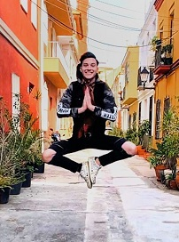

About ME , Portfolio EIA1 SoSe202
About ME
“Live by the harmless untruths that make you brave and kind and healthy and happy.”
― Kurt Vonnegut Jr., Cat's Cradle

Name
Moritz Labza
Alter
: 20 Jahre (geb. 14.06.1999)
Aktueller Wohnort
: Heilbronn (Baden Württemberg)
Studiengang
: Medienkonzeption 1. Semester
Lieblingsfilm
: Uhrwerk Orange (Stanley Kubrick)
Lieblingsbuch
: Der Alchimist (Paulo Coelho)
Traumberuf
: Regie szenischer Film / Werberegie
Bevorzugte Programme
: Adobe Premiere Pro, After Effects CC, FL Studio 10